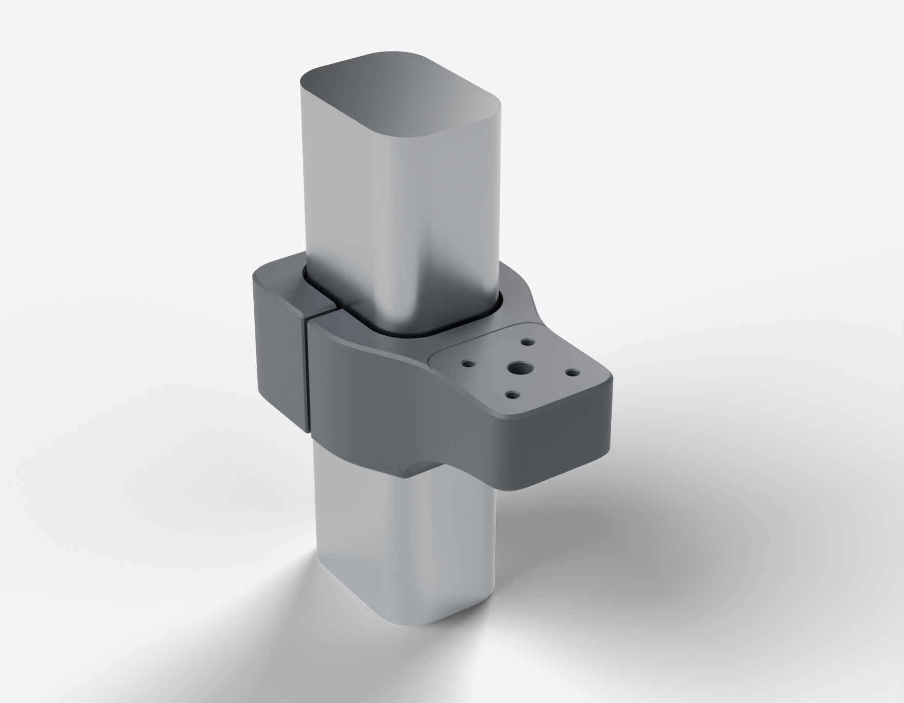
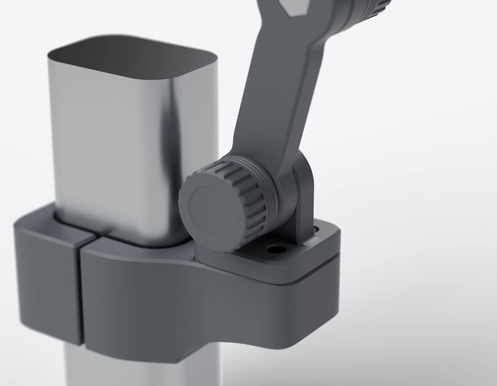
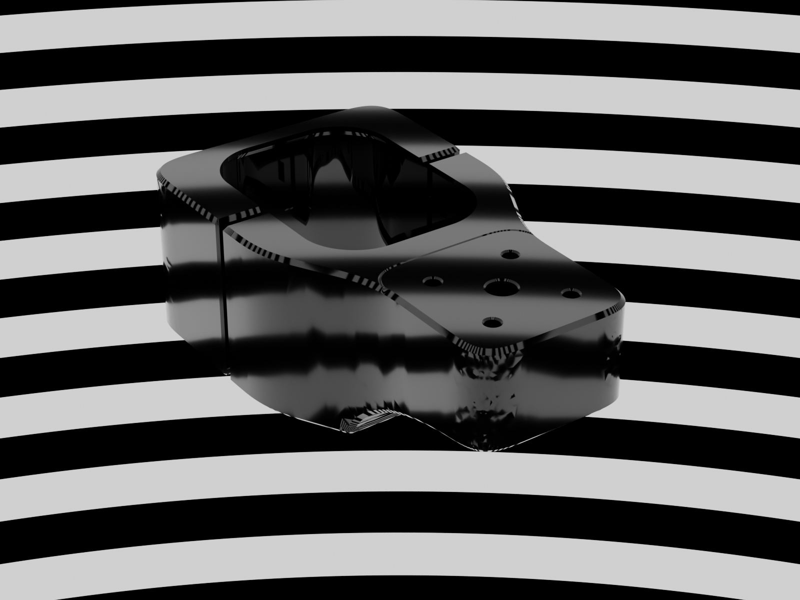
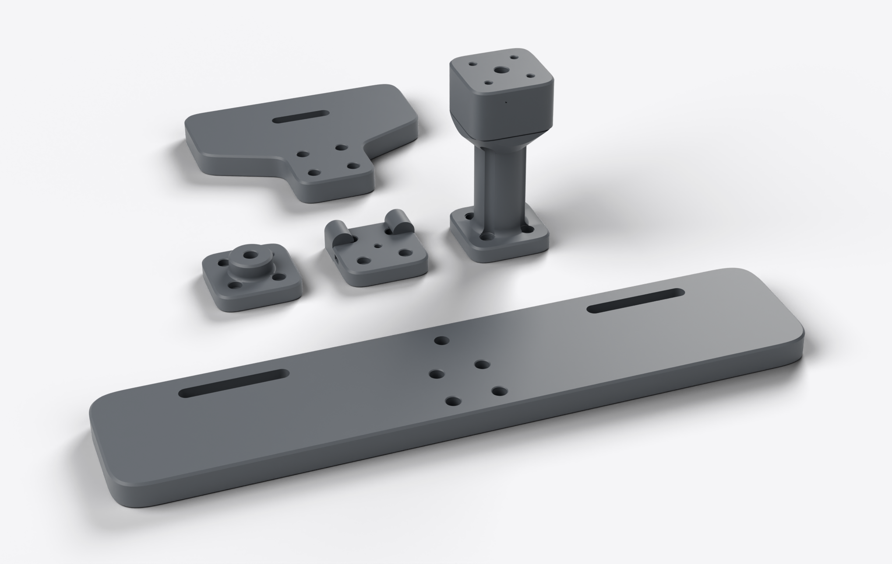

One piece on the column.
A collar, a three-joint arm, a ZV-E10. No visible nuts. Every screw length comes from a checked stack.

- 24rosette teeth
- 15°index step
- 1e-6mm³ clash limit
PETG holds. TPU grips.
Two PETG shells carry the clamp load. A 2 mm TPU liner with 45° ribs grips the column. Four seam screws run inside the wall, heads toward the monitor. The nuts slide in from the bore and the liner hides them.

Teeth, not friction.
Each joint is a 24-tooth Hirth rosette. Lift the knob 2.2 mm, turn 15°, tighten. The two links are one part, the second turned over.

Curves that do not show a seam.
Lines meet quintic corners with zero curvature at the join. The spine is an elliptic scoop. Zebra stripes stay continuous across every join.


One foot for everything.
Every accessory has the same 40 mm foot with four M3 screws. It fits the collar, the arm head, or the post.

Specs
- Column
- 40.2 × 55.5 mm, corner radius 12 (estimated). Rib tips 0.25 mm off the column.
- Screws
- 4 × M3×35 seam, 8 × M3×12 feet, 3 × M6×30 joints, one 1/4"-20 × 3/8" camera screw.
- Payload
- Checked for 1.0 kg at a 188.5 mm lever (estimated).
- Pictures
- Cycles renders of the exported solids. Not photographs, and not a printed fit.